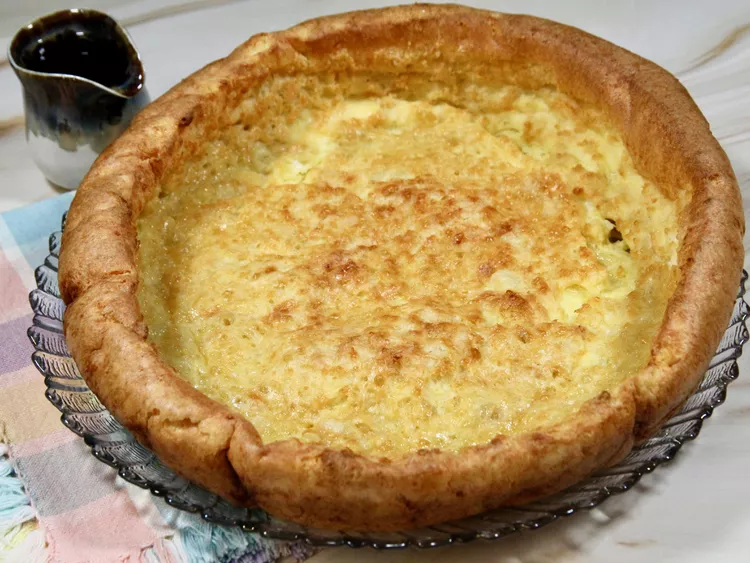

German Panckes

German pancakes are a childhood favorite of mine. Golden pan-style egg dish, with lots of big bubbles while baking. We eat these every Sunday morning. Serve with maple syrup.
Ingredients
- Butter
- Flour
- Milk
- Eggs
- Salt
Directions
- Preheat the oven to 350 degrees F (175 degrees C). Melt butter in a medium baking dish.
- Mix flour, milk, eggs, and salt in a medium bowl. Pour the mixture into the prepared baking dish.
- Bake on center rack in the preheated oven for 30 to 40 minutes, until golden brown.